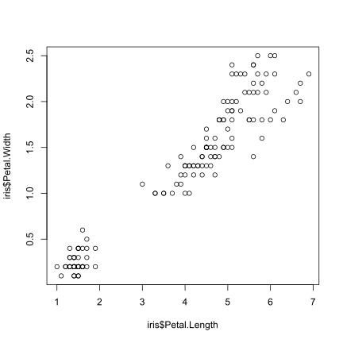

Reproducible research
RaukR 2019 • Advanced R for Bioinformatics
Roy Francis

This is the hands-on material for Reproducible Research. These are series of excercises to help you get started with reproducible research using R. You can consult the RMarkdown cheatsheet for quick reference.
- Familiarise yourself with Markdown/RMarkdown syntax and commonly used snippets.
- Set up a project in R
- Prepare an RMarkdown document
- Add content and export to some common formats
1 RStudio
Create a new project in RStudio by going to File > New Project > New Directory. Select New Project if required. Then label the project name and the directory. An empty project is created. The R session has been refreshed. All variables are removed and the environment is cleared.
Create a new RMarkdown file by going to File > New File > RMarkdown.... Use the default options.
2 RMarkdown
2.1 YAML
The content on the top of the RMarkdown document in three dashes is the YAML matter. The YAML matter for this page looks something like below:
---
title: "Reproducible research"
subtitle: "RaukR 2019 • Advanced R for Bioinformatics"
author: "Roy Francis"
output:
rmarkdown::html_document:
toc: true
toc_float: true
toc_depth: 3
number_sections: true
theme: united
highlight: textmate
df_print: paged
code_folding: none
self_contained: false
keep_md: false
encoding: "UTF-8"
css: ["assets/lab.css"]
---The title, subtitle, author and date is displayed at the top of the rendered document. Argument output is used to specify output document type and related arguments. rmarkdown::html_document is commonly used to specify the standard HTML output. rmarkdown::pdf_document is used to specify the standard PDF output. This then takes further arguments. Sub arguments differ depending on the output document type.
Above are some of the arguments that can be supplied to the HTML document type. theme is used to specify the document style such as the font and layout. highlight is used to specify the code highlighting style. toc specifies that a table of contents must be included. toc_float specifies that the TOC must float on the left of the page while scrolling. toc_depth species the maximum level/depth to be displayed in the TOC. number_sections specifies if the headings/sections must be automatically numbered. Use ?rmarkdown::html_document for description of all the various options.
2.2 Text
The above level 2 heading was created by specifying ## Text. Other headings can be specified similarily.
## Level 2 heading
### Level 3 heading
#### Level 4 heading
##### Level 5 heading
###### Level 6 heading Italic text like this This is italic text can be specified using *This is italic text* or _This is italic text_. Bold text like this This is bold text can be specified using **This is italic text** or **This is italic text**. Subscript written like this H~2~O renders as H2O. Superscript written like this 2^10^ renders as 210.
Bullet points are usually specified using * or + or -.
+ Point one
+ Point two- Point one
- Point two
Block quotes can be specified using >.
> This is a block quote. This
> paragraph has two lines.This is a block quote. This paragraph has two lines.
Lists can also be created inside block quotes.
> 1. This is a list inside a block quote.
> 2. Second item.
- This is a list inside a block quote.
- Second item.
Links can be created using [this](https://rmarkdown.rstudio.com/) like this.
2.3 Images
Images can be displayed from a relative local location using . For example:

This is a caption
By default, the image is displayed at full scale or until it fills the display width. The image dimension can be adjusted {width=40%}.
This is a caption
For finer control, raw HTML can be used. For example;
<img src="rr_lab_assets/gotland.jpg" width="150px">
Images can also be displayed using R code. Chunks option out.width in RMarkdown can be used to control image display size.
This image is displayed at a size of 200 pixels.
```{r,out.width=200}
knitr::include_graphics('rr_lab_assets/gotland.jpg')
```
This image is displayed at a size of 75 pixels.
```{r,out.width=75}
knitr::include_graphics('rr_lab_assets/gotland.jpg')
```
2.4 Code
Text can be formatted as code. Code is displayed using monospaced font. Code formatting that stands by itself as a paragraph is called block code. Block codes are specified using three backticks ``` followed by code and then three more backticks.
This text below
```
This is generic block code.
```renders like this
This is generic block code.Code formatting can also be included in the middle of a sentence. This is called inline code formatting. Using this `This is an inline formatted code.` renders like this: This is an inline formatted code.
The above codes are not actually executed. They are just text formatted in a different font. Code can be executed by specifying the language along with the backticks. Block code formatted as such:
```{r}
str(iris)
```renders like this:
str(iris)## 'data.frame': 150 obs. of 5 variables:
## $ Sepal.Length: num 5.1 4.9 4.7 4.6 5 5.4 4.6 5 4.4 4.9 ...
## $ Sepal.Width : num 3.5 3 3.2 3.1 3.6 3.9 3.4 3.4 2.9 3.1 ...
## $ Petal.Length: num 1.4 1.4 1.3 1.5 1.4 1.7 1.4 1.5 1.4 1.5 ...
## $ Petal.Width : num 0.2 0.2 0.2 0.2 0.2 0.4 0.3 0.2 0.2 0.1 ...
## $ Species : Factor w/ 3 levels "setosa","versicolor",..: 1 1 1 1 1 1 1 1 1 1 ...Code blocks are called chunks. The chunk is executed when this document is rendered. In the above example, the rendered output has two chunks; input and output chunks. The rendered code output is also given code highlighting based on the language. For example;
This code chunk
```{r,eval=FALSE}
ggplot(dfr4,aes(x=Month,y=fraction,colour=Year,group=Year))+
geom_point(size=2)+
geom_line()+
labs(x="Month",y="Fraction of support issues")+
scale_colour_manual(values=c("#000000","#E69F00","#56B4E9",
"#009E73","#F0E442","#006699","#D55E00","#CC79A7"))+
theme_bw(base_size=12,base_family="Gidole")+
theme(panel.border=element_blank(),
panel.grid.minor=element_blank(),
panel.grid.major.x=element_blank(),
axis.ticks=element_blank())
```when rendered (not evaluated) looks like
ggplot(dfr4,aes(x=Month,y=fraction,colour=Year,group=Year))+
geom_point(size=2)+
geom_line()+
labs(x="Month",y="Fraction of support issues")+
scale_colour_manual(values=c("#000000","#E69F00","#56B4E9",
"#009E73","#F0E442","#006699","#D55E00","#CC79A7"))+
theme_bw(base_size=12,base_family="Gidole")+
theme(panel.border=element_blank(),
panel.grid.minor=element_blank(),
panel.grid.major.x=element_blank(),
axis.ticks=element_blank())The chunk has several options which can be used to control chunk properties.
Using `{r,eval=FALSE}` prevents that chunk from being executed. `{r,eval=TRUE}` which is the default, executes the chunk. Using `{r,echo=FALSE}` prevents the code from that chunk from being displayed. Using `{r,results="hide"}` hides the output from that chunk. There are many other chunk arguments. Here are some of them:
| Option | Default | Description |
|---|---|---|
| eval | TRUE | Evaluates the code in this chunk |
| echo | TRUE | Display the code |
| results | “markup” | “markup”,“asis”,“hold” or “hide” |
| warning | TRUE | Display warnings from code execution |
| error | FALSE | Display error from code execution |
| message | TRUE | Display messages from this chunk |
| tidy | FALSE | Reformat code in to be tidy |
| cache | FALSE | Cache results for future renders |
| comment | “##” | Character to prefix result output |
Chunk options are specified like this:
```{r,eval=FALSE,echo=FALSE,fig.height=6,fig.width=7}
```2.5 Plots
R Plots can be plotted like below:
```{r,fig.height=6,fig.width=6}
plot(x=iris$Petal.Length,y=iris$Petal.Width)
```
Below are some of chunk options relating to plots.
| Option | Default | Description |
|---|---|---|
| fig.height | 7 | Figure height in inches |
| fig.width | 7 | Figure width in inches |
| fig.cap | “” | Figure caption |
| fig.align | “center” | Figure alignment |
| dev | “png” | Change png, jpg, pdf, svg etc |
2.6 Export
The RMarkdown notebook can be exported into various format. The most common formats are HTML and PDF.
2.6.1 HTML
The RMarkdown document can be previewed as an HTML inside RStudio by clicking the ‘Knit’ button.

The document can also be exported as an HTML file by running the code below:
rmarkdown::render("document.Rmd")HTML documents can be opened and viewed in any standard browser such as Chrome, Safari, Firefox etc.
2.6.2 PDF
An Rmd document can be converted to a PDF. Behind the scenes, the markdown is converted to TeX format. The conversion to PDF needs a tool that understands TeX format and converts to PDF. This can be softwares like ‘MacTeX’, ‘MikTeX’ etc. which needs to be installed on the system beforehand.
The output argument in the YAML matter must be changed to pdf_document, and the Rmd file can be converted as follows:
rmarkdown::render("document.Rmd")The PDF output can also be specified as such:
rmarkdown::render("document.Rmd",output_format=pdf_document())Sometimes TeX converters may need additional libraries which may need to be installed. And all features of HTML are not supported on TeX which may return errors.
See here for other export formats.
3 Report
This is a do-it-yourself challenge to RMarkdown Notebook/Report. Have a look at the HTML page below and try to recreate the page. Instructions and helpful tips are given below.
This is the challenge report to prepare.
- Create a new RMarkdown document
- Set YAML matter
- Set title, subtitle, Author name.
- Set date to be automatically computed in this format “25/04/2018”. See here on how to format dates. Solution:
date: "`r format(Sys.Date(),format='%d/%m/%Y')`" - Show a floating table of contents on the top left of the page. See here on how to do this.
- Set automatic numbering of sections. Check
?html_document. - Set theme to ‘flatly’.
- Set code highlighting to ‘kate’.
- Notice the little buttons on the right to show/hide code. Show this button and set all code to hidden by default. See here on how to do this.
- Set the default data.frame printing option to pageable HTML table. See here.
- Add a Level 1 heading
- Add some text and a Level 2 heading
- Create an R chunk to display the structure of cars dataset. Display the code and the results. See here to read more about chunk options.
- Display the first six rows and all columns of the cars dataset as a table.
- Create a new sub-section and create a scatterplot with the two variables from cars dataset. Hide the code used and only show the plot. Create a square aspect ratio plot by setting equal figure height and width in the chunk options. Add a caption for the plot using chunk options.
- Create a new sub-section, download a random image and include it in the document.
- Render the document in RStudio by clicking on the ‘Knit’ button.
- Render the document to an HTML file using a console command.
- You can try to render this document to a PDF. Note that you will need to install additional software for this. For a lightweight latex distribution for knitr, see here. Change output type from
html_documenttopdf_documentand remove all arguments excepttoc: true. Try rendering using ‘Knit’.
4 Pres • ioslides
ioslides is an HTML and javascript based presentation system. RMarkdown provides a way to use this framework through R purely using R code. Here is an example of an ioslide presentation.
This is a do-it-yourself challenge to ioslides Presentation using RMarkdown. Have a look at the presentation below and try to recreate it. Instructions and helpful tips are given below.
This is the final result for challenge ioslide presentation.
- Create a new RMarkdown document.
- Set YAML matter output to
output: ioslides_presentation. See here for a guide to using ioslides presentation in R. See?ioslides_presentation()for the options. - Set theme and highlight as needed.
- New slides are defined using
#with level 1 heading or----without a heading. Subtitle can be specified using a pipe symbol, like this# Title | Subtitle. Slides starting with#contains only the title and/or subtitle.##adds a standard content slide with a heading on the top. - Add a title slide
# Title Slide | Subtitle- Add a standard slide with a heading and a bulleted list. For example
## Level 2 Heading
- Point one
- Point twoThe bullets can set to show incrementally on click:
## Level 2 Heading
> - Point one
> - Point two- Create a new slide and add some R chunk. For example:
```{r}
data(iris)
str(cars)
```- Create a new slide and display a table by executing an R chunk. For example:
```{r}
head(cars)
```- Create a new slide and display an R plot. For example:
```{r,fig.height=3,fig.width=5,fig.cap="This is a scatterplot."}
plot(cars$speed,cars$dist)
```- Add an image to a new slide. For example:
{width=60%}- When viewing the presentation, press
Oto see an overview of the slides.
5 Pres • revealjs
revealJS is an HTML and javascript based presentation system. The revealjs R package provides a way to use this framework through R purely using R code. Here is an example of an revealJS presentation.
This is a do-it-yourself challenge to RevealJS 2-D Presentation using RMarkdown. Have a look at the presentation below and try to recreate it. Instructions and helpful tips are given below.
This is the challenge RevealJS presentation.
- Install R package
revealjsand load the library. - Create a new RMarkdown document.
- Set YAML matter output to
output: revealjs_presentation. See here for a guide to using RevealJS presentation in R. See?revealjs_presentationfor options. - Set theme and highlight as needed.
- New slides are defined using
#with level 1 heading,##with level 2 heading or----without a heading. The best feature of RevealJS is that slides are not restricted to horizontal (linear) flow. Slides can also flow vertical from any of the horizontal slides. A level 2 heading##signifies that the content under that flows vertically. - Add a level 1 heading and add some text content.
- Create a new slide vertically by adding a level 2 heading and add some R chunk. For example:
## Level 2 Heading
```{r}
data(iris)
str(cars)
```- Create a new slide vertically using level 2 heading and display a table by executing an R chunk. For example:
## Level 2 Heading
```{r}
head(cars)
```- Create a new slide vertically and display an R plot. For example:
## Level 2 Heading
```{r,fig.height=3,fig.width=5,fig.cap="This is a scatterplot."}
plot(cars$speed,cars$dist)
```- Create a new slide horizontally. Add an image to a new slide. For example:
- When viewing the presentation, press
Oto see an overview of the slides.
6 Pres • xaringan
xaringan is an R package that provides bindings to remarkjs HTML and javascript based presentation system. Here is an example of a remarkjs presentation. Here is an example that actually uses the xaringan package in R.
The remarkjs repo and wiki pages and the xaringan repo and wiki are good sources of documentation.
This is a do-it-yourself challenge to remarkjs presentation system using RMarkdown in xaringan. Have a look at the presentation below and try to recreate it. Instructions and helpful tips are given below.
This is the challenge Xaringan presentation.
- Install R package
xaringanand load the library. - Create a new RMarkdown document.
- Set YAML matter output to
output: xaringan::moon_reader. Use?moon_reader()for options. - Set theme and highlight as needed.
- New slides are defined using
---. Headings as usual are#for level 1 heading,##with level 2 heading etc. - Add a level 1 heading and add some bullet points.
# Bullet points
- Point One
- Point TwoNote that Xaringan/remarkjs does not use the regular pandoc markdown, therefore some features may not work or may be different. For example superscript is created using
2<sup>10</sup>rather than2^10^. Subscript is created using2<sub>10</sub>rather than2~10~.Add some code content. For example;
```{r}
data(iris)
str(cars)
```- Slides can be named which helps to create links back to this slide. Create a new slide and add a name like this
name: name. Add a heading and add an R plot on this slide.
---
name: plots
# Plots
```{r,fig.height=3,fig.width=5,fig.cap="This is a scatterplot."}
plot(cars$speed,cars$dist)
```Note that the slide name is added immediately under the new slide creator ---.
- Create a new slide with a table and name the slide table.
---
name: table
# Table
```{r}
head(cars)
```From this slide, create a link to go back to plots.
Click [here](#plots) to go to plots.- Create a new slide and add an image.
---
name: image
# Image
If this is too big, you can manually set the width using raw HTML <img src="rr_lab_assets/gotland.jpg" width="250px">
- It is possible to highlight parts of code. For example, in this code,
```{r}
ggplot(iris,aes(x=Petal.Length,Sepal.Width,col=Species))+
geom_point(size=2)+
labs(x="Petal Length",y="Sepal Width")+
scale_colour_manual(values=c("#000000","#E69F00","#56B4E9",
"#009E73","#F0E442","#006699","#D55E00","#CC79A7"))+
theme_bw(base_size=12)+
theme(panel.border=element_blank(),
panel.grid.minor=element_blank(),
panel.grid.major.x=element_blank(),
axis.ticks=element_blank())
```say, we want to highlight theme_bw(base_size=12). We can add {{}} around it. Add the below code to a new slide called highlighting.
```{r}
ggplot(iris,aes(x=Petal.Length,Sepal.Width,col=Species))+
geom_point(size=2)+
labs(x="Petal Length",y="Sepal Width")+
scale_colour_manual(values=c("#000000","#E69F00","#56B4E9",
"#009E73","#F0E442","#006699","#D55E00","#CC79A7"))+
{{theme_bw(base_size=12)}}+
theme(panel.border=element_blank(),
panel.grid.minor=element_blank(),
panel.grid.major.x=element_blank(),
axis.ticks=element_blank())
```- Try out some math expressions. Paste a few of the line below to your slide.
$e^{i\pi} + 1 = 0$
$$\frac{E \times X^2 \prod I}{2+7} = 432$$
$$\sum_{i=1}^n X_i$$
$$\int_0^{2\pi} \sin x~dx$$Add a -- between each line to display them incrementally.
$e^{i\pi} + 1 = 0$
--
$$\frac{E \times X^2 \prod I}{2+7} = 432$$
--
$$\sum_{i=1}^n X_i$$
--
$$\int_0^{2\pi} \sin x~dx$$When viewing the presentation, press
Hto see an overview of keyboard shortcuts during presentation.remarkjs has a nifty feature where you can press
Cto clone the presentation in a new browser window. Now both these copies are linked. You can change one of them to the presenter mode by pressingP. Now changing the slide in one window changes the other. Convenient when a presenter view/audience view is needed.
7 Session info
## R version 3.5.2 (2018-12-20)
## Platform: x86_64-pc-linux-gnu (64-bit)
## Running under: Ubuntu 18.04.2 LTS
##
## Matrix products: default
## BLAS: /usr/lib/x86_64-linux-gnu/blas/libblas.so.3.7.1
## LAPACK: /usr/lib/x86_64-linux-gnu/lapack/liblapack.so.3.7.1
##
## locale:
## [1] LC_CTYPE=en_GB.UTF-8 LC_NUMERIC=C
## [3] LC_TIME=en_GB.UTF-8 LC_COLLATE=en_GB.UTF-8
## [5] LC_MONETARY=en_GB.UTF-8 LC_MESSAGES=en_GB.UTF-8
## [7] LC_PAPER=en_GB.UTF-8 LC_NAME=C
## [9] LC_ADDRESS=C LC_TELEPHONE=C
## [11] LC_MEASUREMENT=en_GB.UTF-8 LC_IDENTIFICATION=C
##
## attached base packages:
## [1] stats datasets grDevices utils graphics methods base
##
## other attached packages:
## [1] revealjs_0.9 xaringan_0.9 ggrepel_0.8.0 stringr_1.4.0
## [5] captioner_2.2.3 gdtools_0.1.8 gridExtra_2.3 kableExtra_1.1.0
## [9] ggplot2_3.1.1 tidyr_0.8.3 dplyr_0.8.0.1 bookdown_0.9
## [13] knitr_1.23
##
## loaded via a namespace (and not attached):
## [1] httr_1.4.0 pkgload_1.0.2 jsonlite_1.6
## [4] viridisLite_0.3.0 shiny_1.3.2 assertthat_0.2.1
## [7] highr_0.8 yaml_2.2.0 remotes_2.0.4
## [10] sessioninfo_1.1.1 pillar_1.3.1 backports_1.1.4
## [13] glue_1.3.1 digest_0.6.19 promises_1.0.1
## [16] rvest_0.3.3 colorspace_1.4-1 cowplot_0.9.4
## [19] htmltools_0.3.6 httpuv_1.5.1 plyr_1.8.4
## [22] pkgconfig_2.0.2 devtools_2.0.2 rmdshower_2.1.1
## [25] purrr_0.3.2 xtable_1.8-3 scales_1.0.0
## [28] webshot_0.5.1 processx_3.3.0 later_0.8.0
## [31] tibble_2.1.1 usethis_1.5.0 ggpubr_0.2
## [34] withr_2.1.2 lazyeval_0.2.2 cli_1.1.0
## [37] magrittr_1.5 crayon_1.3.4 mime_0.6
## [40] memoise_1.1.0 evaluate_0.14 ps_1.3.0
## [43] fs_1.2.7 xml2_1.2.0 pkgbuild_1.0.3
## [46] Cairo_1.5-10 rsconnect_0.8.13 tools_3.5.2
## [49] data.table_1.12.2 prettyunits_1.0.2 hms_0.4.2
## [52] plotly_4.9.0 munsell_0.5.0 callr_3.2.0
## [55] compiler_3.5.2 tinytex_0.13 rlang_0.3.4
## [58] grid_3.5.2 rstudioapi_0.10 htmlwidgets_1.3
## [61] crosstalk_1.0.0 base64enc_0.1-3 labeling_0.3
## [64] rmarkdown_1.13 testthat_2.0.1 gtable_0.3.0
## [67] curl_3.3 reshape2_1.4.3 R6_2.4.0
## [70] ggiraph_0.6.1 rprojroot_1.3-2 readr_1.3.1
## [73] desc_1.2.0 stringi_1.4.3 Rcpp_1.0.1
## [76] tidyselect_0.2.5 xfun_0.7Built on: 08-Jun-2019 at 19:58:37.
2019 • SciLifeLab • NBIS • RaukR